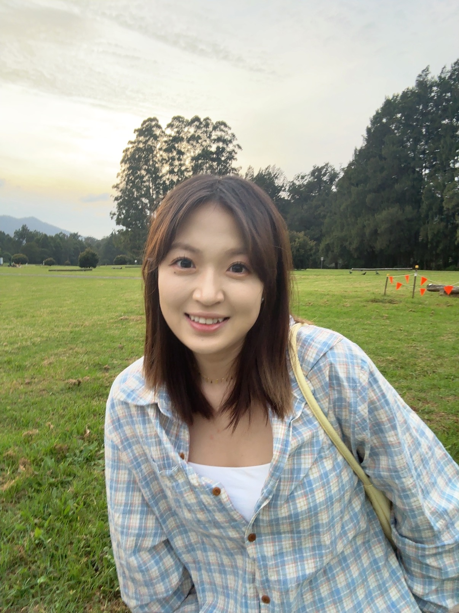

企业产品体验设计
6 年设计经验，4 年聚焦 B 端 SaaS 与 AI 产品体验设计。

WANGXIAOYU — PORTFOLIO 2026女 · 杭州 · 6年经验 · 求职意向：UI/UX 设计师
6 年设计经验，4 年聚焦 B 端 SaaS 与 AI 产品体验设计。
围绕用户任务与业务流程完成信息架构、交互及 UI 设计，并与研发协作推动方案落地。
使用 Codex 迭代界面代码，通过 GitLab 提交，参与设计与研发的协作交付。
UI/UX 设计师
UI/UX 设计师
视觉设计师
Figma · Cinema 4D · Photoshop · Illustrator · ChatGPT · Midjourney
重构研发任务启动、代码评审、技能发现、定时任务与多 ADE 协作流程。任务启动前置操作约减少 30%，ADE 工作流覆盖 80% 以上核心研发协作场景；内部调研反馈显示研发用户体验明显改善。
进入完整案例 ↗围绕客户流失率高与内部协同效率问题，梳理用户角色并设计角色工作台、流失风险预警、多维业绩分析及批量审批流程。客户流失率从 35% 降至 28.3%；批量审批等流程支持内部人效提升超过 30%；设计系统覆盖 90% 以上业务场景，后续设计协同与研发效率提升约 40%。
进入完整案例 ↗本科 · 动画 · 2016 — 2020